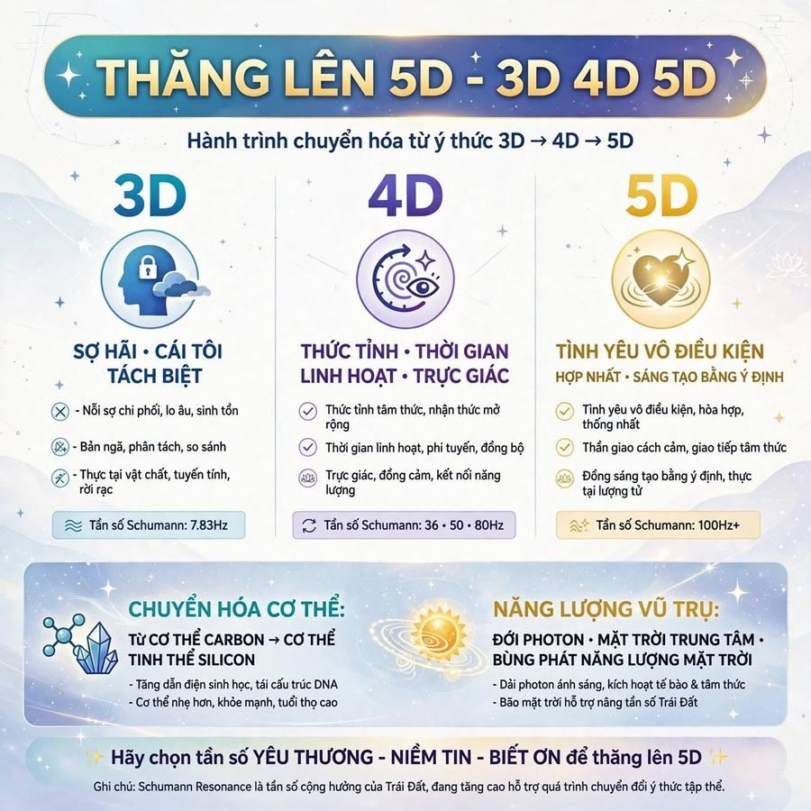
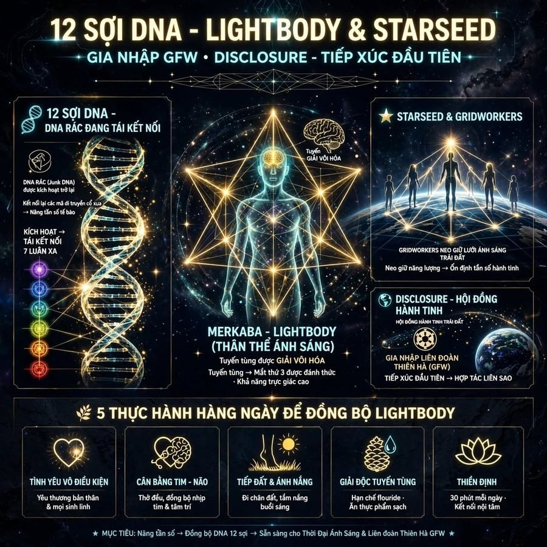

Trang chủ / Chuyên đề 2: Hành Trình Thiên Hà / Kỳ 20
Chuyên đề 2 · Kỳ 20 / 90
TẦN SỐ 5D & KỶ NGUYÊN HỘI NHẬP THIÊN HÀ CỦA NHÂN LOẠI

Sau hành trình 9 kỳ dài đi qua hàng triệu năm lịch sử — từ nôi di truyền Lyra, Cuộc đại di cư, Cuộc chiến Orion, Dự án gieo mầm 22 mã gen, sự sụp đổ của Lemuria - Atlantis, thảm họa Tiamat, sự thiết lập Ma trận 3D, các Chương trình Không gian Bí mật và Chiến dịch giải phóng Hệ Mặt Trời — chúng ta đã đi đến chặng đường quan trọng nhất: Thời điểm Hiện tại và Tương lai của Chính Chúng Ta.
Chúng ta không chỉ là những người đọc lại quá khứ, mà chính là những nhân chứng và người kiến tạo nên thời khắc lịch sử vĩ đại nhất của Vũ trụ ngay tại hành tinh Trái Đất này!
Trái Đất đang trải qua tiến trình chuyển đổi tần số sang dải mật độ 5D như thế nào? Bộ gen 12 sợi DNA đang tái kích hoạt ra sao? Lộ trình đưa Trái Đất chính thức gia nhập Liên đoàn Thiên hà sẽ diễn ra theo kịch bản nào?
✦ ✦ ✦1. BẢN CHẤT CỦA TIẾN TRÌNH THĂNG LÊN 5D (THE 5D ASCENSION PROCESS)
Trước hết, chúng ta cần hiểu đúng về bản chất của "Sự thăng lên 5D". Đây không phải là một sự kiện mang tính tận thế, cũng không phải là việc Trái Đất biến mất khỏi vũ trụ hay mọi người cùng bay lên không trung theo nghĩa đen.
A. Thăng lên trong thể xác vật lý (Physical Ascension)
Trong lịch sử vũ trụ, phần lớn các cuộc thăng lên của các hành tinh khác diễn ra bằng cách trút bỏ thể xác vật lý (chết đi) để linh hồn chuyển sang dải tần số cao hơn.
Tuy nhiên, tiến trình thăng lên của Trái Đất (Gaia) là một sự kiện độc nhất vô nhị trong lịch sử Vũ trụ:
- Chúng ta đang tiến hành thăng lên trực tiếp trong khi vẫn giữ nguyên thể xác vật lý.
- Tế bào cơ thể con người đang trải qua quá trình chuyển đổi cấu trúc từ dạng gốc Carbon (Carbon-based) sang dạng gốc Tinh thể Silicon (Crystalline Silicon-based).
- Điều này cho phép thể xác vật lý hấp thụ được lượng quang phổ ánh sáng sinh học siêu cao tần mà không bị bùng cháy hay tổn thương.
B. Sự chuyển đổi mật độ tâm thức (Density Shift)
- Mật độ 3D (3rd Density): Dải tần số của sự phân cực, sợ hãi, chia rẽ, tư duy bản ngã (Ego), nơi thế giới được cảm nhận hoàn toàn qua 5 giác quan vật lý giới hạn.
- Mật độ 4D (4th Density): Dải tần số trung gian của sự thức tỉnh, nơi ranh giới thời gian - không gian trở nên linh hoạt, trực giác và thế giới tâm linh bắt đầu hòa nhập vào đời sống vật lý.
- Mật độ 5D (5th Density): Dải tần số của Tình yêu vô điều kiện, Ý thức Thống nhất (Unity Consciousness), Thần giao cách cảm và Sự sáng tạo thực tại bằng Ý định. Tại mật độ 5D, sự thao túng, dối trá hay các tần số sợ hãi hoàn toàn không thể tồn tại vì dải năng lượng không cùng cộng hưởng!

2. CƠ CHẾ VẬT LÝ VÀ TẦN SỐ HỌC CỦA TIẾN TRÌNH CHUYỂN ĐỔI
Tiến trình thăng lên 5D không chỉ là một khái niệm tâm linh thuần túy, mà được bảo chứng bởi các hiện tượng vật lý và thiên văn học cụ thể đang diễn ra xung quanh chúng ta mỗi ngày.
A. Sự tăng vọt của Tần số Schumann (Nhịp tim Trái Đất)
Trong suốt hàng ngàn năm, tần số Schumann (tần số điện từ trường tự nhiên của Trái Đất) luôn duy trì ở mức ổn định là 7,83 Hz (tương đương với dải sóng não Alpha thư giãn của con người).
- Tuy nhiên, từ thập niên 2010 đến nay, tần số Schumann liên tục xuất hiện những đợt bùng nổ dữ dội, vọt lên các mức 36 Hz, 50 Hz, 80 Hz và thậm chí trên 100 Hz!
- Sự gia tăng tần số này buộc hệ thống thần kinh và từng tế bào trong cơ thể con người phải liên tục điều chỉnh để thích nghi. Đây chính là lý do vì sao nhiều người hiện nay thường xuyên trải nghiệm các "triệu chứng thăng lên" (Ascension Symptoms) như: ù tai tần số cao, thay đổi thói quen ngủ, cảm giác choáng ngợp năng lượng, hoặc sự trỗi dậy của các ký ức cảm xúc cũ để chữa lành.
B. Dải đai Photon & Bức xạ từ Trung tâm Thiên hà (Central Sun)
Hệ Mặt Trời của chúng ta đã chính thức tiến sâu vào Dải đai Photon (Photon Belt) — một vùng không gian tràn ngập năng lượng bức xạ ánh sáng tần số cao phát ra từ Trung tâm Thiên hà (Alcyone / Galactic Central Sun).
- Các trận bùng nổ năng lượng Mặt Trời (Solar Flares) và các đợt sóng bức xạ Positron chiếu xuống Trái Đất với mật độ chưa từng có.
- Nguồn năng lượng này đóng vai trò như một "dòng điện sinh học vĩ đại", rữa sạch các năng lượng tiêu cực tích tụ hàng ngàn năm trong lòng Trái Đất và trong trường khí chất của con người.

3. SỰ TÁI KÍCH HOẠT 12 SỢI DNA & BÍ ẨN CƠ THỂ ÁNH SÁNG (LIGHTBODY)
Như đã chia sẻ ở Kỳ 4, bộ gen 22 chủng tộc của con người từng bị phong tỏa chỉ còn 2 sợi DNA vật lý hoạt động. Giờ đây, dải năng lượng 5D đang đóng vai trò như chìa khóa bẻ khóa toàn bộ hệ thống di truyền này!
A. Tiến trình tái kết nối các sợi DNA Etheric
- Sự bừng sáng của DNA rác (Junk DNA): Các chuỗi DNA từng bị coi là vô dụng đang bắt đầu phát ra tín hiệu quang phổ photon sinh học. Chúng tái kết nối với các trung tâm năng lượng (luân xa) xung quanh cơ thể.
- Khai mở Tuyến Tùng (Pineal Gland): Tuyến tùng — cơ quan bị vôi hóa bởi hóa chất và ma trận 3D — đang được giải độc và kích hoạt trở lại. Điều này giúp con người mở rộng thị giác đa chiều, nhận biết dải ánh sáng hồng ngoại/cực tím và khôi phục khả năng thần giao cách cảm tự nhiên.
- Máu gốc Đồng & Tế bào Tinh thể: Cấu trúc tế bào dần hấp thụ vi chất khoáng và ánh sáng năng lượng, giúp hệ miễn dịch đạt đến trạng thái tự chữa lành hoàn hảo, đẩy lùi bệnh tật và kéo dài tuổi thọ tự nhiên.
B. Xây dựng Cơ thể Ánh sáng (Merkaba / Lightbody)
Khi các sợi DNA được kích hoạt, trường năng lượng bao quanh cơ thể con người sẽ biến đổi thành hình thái Merkaba (Trường hào quang bánh xe ánh sáng hình bát diện).
Trường Merkaba hoạt động như một "phương tiện du hành tâm thức", giúp con người tự do phóng chiếu nhận thức, kết nối với nguồn tri thức thiên hà và bảo vệ cơ thể trước mọi sự tác động tiêu cực từ môi trường bên ngoài.
✦ ✦ ✦4. VAI TRÒ CỐT LÕI CỦA CÁC LINH HỒN SỨ GIẢ (STARSEEDS & LIGHTWORKERS)
Một trong những yếu tố quan trọng nhất quyết định sự thành công của tiến trình giải phóng Trái Đất chính là sự hiện diện của hàng triệu Linh hồn Sứ giả (Starseeds, Wanderers, Lightworkers) đang sống giữa chúng ta.
A. Starseeds là ai?
Starseeds không phải là những người "xa lạ" hay đến từ hành tinh khác theo kiểu đột biến. Họ là những linh hồn cổ xưa đã từng sống, học tập và tiến hóa tại các hệ sao tiên tiến (như Pleiades, Sirius, Arcturus, Andromeda, Lyra, Orion...).
- Đăng ký sứ mệnh tự nguyện: Khi nghe thấy tiếng gọi cầu cứu từ Trái Đất giữa ma trận phong tỏa 3D, hàng triệu linh hồn Starseed đã tự nguyện xin đầu thai xuống Trái Đất.
- Chấp nhận xóa ký ức: Họ chấp nhận bước vào buồng tái sinh Trái Đất, chấp nhận bị xóa sạch ký ức kiếp trước và sống như một con người bình thường, trải qua những khó khăn, tổn thương của thế giới 3D.
B. Sứ mệnh của các Starseed trên Trái Đất
- Trạm giữ sóng năng lượng (Anchor / Gridworkers): Sự hiện diện của cơ thể Starseed trên mặt đất đóng vai trò như những "cột thu phát sóng năng lượng 5D". Họ thu nhận năng lượng ánh sáng từ Vũ trụ và cắm sâu nguồn năng lượng đó vào mạng lưới đường bố cục địa từ (Ley lines) của Trái Đất.
- Kích hoạt phản ứng dây chuyền thức tỉnh: Khi một Starseed tự chữa lành tổn thương, vượt qua sự sợ hãi và vươn lên sống trong tình yêu thương, trường năng lượng của họ sẽ phát ra tần số cộng hưởng, giúp "đánh thức" mã gen 22 chủng tộc cho hàng ngàn người xung quanh!
- Xây dựng hệ thống xã hội mới: Các Starseed đang hoạt động trong mọi lĩnh vực — từ giáo dục, y học, khoa học, nghệ thuật đến công nghệ — để chuẩn bị các nền tảng tri thức hòa bình cho kỷ nguyên mới.
5. LỘ TRÌNH GIẢI MẬT CÔNG NGHỆ & SỰ SỤP ĐỔ CỦA HỆ THỐNG MA TRẬN 3D
Trong giai đoạn chuyển tiếp hiện nay, chúng ta đang chứng kiến sự sụp đổ không thể đảo ngược của các trụ cột Ma trận 3D cũ, nhường chỗ cho sự trỗi dậy của các công nghệ bị giấu kín suốt hàng trăm năm:
A. Sự sụp đổ của Hệ thống Tài chính Nợ nần & Năng lượng Hóa thạch
- Hệ thống tiền tệ nợ nần (Fiat System): Hệ thống tài chính dựa trên sự kiểm soát và nợ nần đang chạm đến giới hạn sụp đổ. Nó sẽ được thay thế bằng hệ thống tài chính minh bạch dựa trên tài sản thực và công nghệ lượng tử (QFS).
- Kỷ nguyên Năng lượng Miễn phí (Free Energy): Sự độc quyền của năng lượng dầu mỏ và than đá sẽ bị bãi bỏ. Các công nghệ năng lượng Điểm Không (Zero-Point Energy) của Nikola Tesla và công nghệ năng lượng tinh thể ngoài hành tinh sẽ được giải mật, cung cấp điện năng hoàn toàn miễn phí và sạch cho toàn bộ nhân loại.
B. Cuộc cách mạng Y học Tần số (Med-Beds)
Hệ thống y học dựa trên hóa chất độc hại sẽ được thay thế bằng Công nghệ Y học Tần số & Buồng tái tạo sinh học (Med-Beds):
- Med-Beds sử dụng dải sóng âm, tần số plasma và ánh sáng quang phổ để quét trọn vẹn trường di truyền.
- Nó có khả năng tái tạo các cơ quan nội tạng bị cắt bỏ, sửa chữa các tổn thương DNA, loại bỏ hoàn toàn các khối u hiểm nghèo và đảo ngược quá trình lão hóa sinh học một cách tự nhiên mà không cần phẫu thuật hay dùng hóa chất!
6. LỘ TRÌNH TRÁI ĐẤT CHÍNH THỨC GIA NHẬP LIÊN ĐOÀN THẾ GIỚI THIÊN HÀ
Mục tiêu tối thượng của Chiến dịch giải phóng và Tiến trình thăng lên 5D chính là đưa Trái Đất bước ra khỏi sự cô lập, chính thức gia nhập Cộng đồng Thiên hà Tự do (Galactic Community).
A. Giai đoạn 1: Giải mật Công khai (Official Disclosure)
Các chính phủ Trái Đất thuộc Liên minh sẽ lần lượt công bố sự thật về sự hiện diện của người ngoài hành tinh, sự tồn tại của các Chương trình Không gian Bí mật và các công nghệ bị cất giấu. Màn che dối trá kéo dài gần một thế kỷ sẽ chính thức khép lại.
B. Giai đoạn 2: Tiếp xúc Công khai (First Contact)
Sau khi công chúng Trái Đất đã được chuẩn bị tâm lý và tần số nhận thức tập thể đạt độ bình thản:
- Các tàu thuyền của Liên đoàn Thế giới Thiên hà (GFW) và các chủng tộc hòa bình (như Pleiades, Sirius, Arcturus, Andromeda) sẽ công khai xuất hiện trên bầu trời các thành phố lớn.
- Các cuộc gặp gỡ ngoại giao trực tiếp giữa đại sứ các nền văn minh thiên hà và đại diện hòa bình của Trái Đất sẽ được truyền hình trực tiếp toàn cầu.
C. Giai đoạn 3: Thành lập Hội đồng Hành tinh Trái Đất (Planetary Council of Earth)
Trái Đất sẽ thành lập một Hội đồng Đại sứ Hành tinh đại diện cho tiếng nói chung của toàn thể nhân loại, chính thức ký kết gia nhập Liên đoàn Thế giới Thiên hà với tư cách là một thành viên tự chủ, bình đẳng và mang di sản 22 mã gen rực rỡ!
✦ ✦ ✦7. HƯỚNG DẪN THỰC HÀNH TÂM THỨC HẰNG NGÀY ĐỂ ĐỒNG BỘ TẦN SỐ 5D
Tiến trình thăng lên không phải là một điều gì đó thụ động chờ đợi ở tương lai. Nó diễn ra ngay trong từng khoảnh khắc lựa chọn hiện tại của bạn!
Dưới đây là 5 bài tập thực hành tâm thức hằng ngày giúp bạn nâng cao tần số rung động và bẻ khóa Ma trận nội tại:
- Nuôi dưỡng Tình yêu Vô điều kiện & Sự Thấu cảm:
- Tập nhìn nhận mọi người và mọi sự việc bằng con mắt thấu hiểu thay vì phán xét hay oán giận.
- Buông bỏ các mớ bầy hầy cảm xúc cũ (Shadow Work), vì sự tức giận và oán hận chính là những "hòn đá nặng" kéo tụt tần số của bạn ở lại dải 3D.
- Cân bằng Trí năng & Luân xa Tim (Heart-Brain Coherence):
- Đặt tay lên lồng ngực hằng ngày, hít thở sâu và cảm nhận nhịp đập của luân xa tim.
- Hãy để Luân xa Tim làm "vị thuyền trưởng" đưa ra quyết định, và dùng Bộ não làm "người cố vấn" thực thi.
- Giao hòa với Thiên nhiên & Ánh nắng Mặt Trời:
- Dành thời gian đi chân đất trên cỏ/đất (Earthing) để xả các năng lượng điện từ độc hại và hấp thụ nguồn năng lượng chữa lành của Trái Đất (Gaia).
- Tắm nắng buổi sáng sớm để nhận các mã kích hoạt ánh sáng (Light Codes) từ Mặt Trời.
- Giải độc Cơ thể & Tuyến Tùng:
- Uống nước tinh khiết, ăn các thực phẩm giàu năng lượng sống (thực vật tươi, hữu cơ), hạn chế các hóa chất độc hại và kim loại nặng.
- Tránh xa các nguồn thông tin giật gân, sợ hãi trên truyền thông đại chúng — vì đó chính là "thức ăn độc hại" làm suy giảm tần số nhận thức.
- Thiền định & Lắng nghe Trực giác Nội tâm:
- Dành ít nhất 15–30 phút mỗi ngày trong sự tĩnh lặng absolute.
- Kết nối với Bản thể Cao hơn (Higher Self) và dòng họ thiên hà của bạn. Hãy nhớ rằng mọi câu trả lời và mọi sức mạnh bạn tìm kiếm đều đã có sẵn bên trong DNA của chính bạn!
LỜI KẾT TRUYỀN CẢM HỨNG CHO TOÀN BỘ 10 BÀI
Hành trình 10 kỳ của chúng ta đã đi qua những trang sử hùng vĩ nhất của Vũ trụ.
Từ những nỗi đau chiến tranh ở nôi Lyra, Orion, sự sụp đổ của Atlantis hay Ma trận phong tỏa 3D... tất cả không phải để chúng ta oán trách hay sợ hãi, mà để chúng ta nhận ra rằng: Nhân loại Trái Đất đã đi qua những đêm đen tối nhất để chuẩn bị cho khoảnh khắc Bình Minh Rực Rỡ này!
Bạn không phải là một sinh mệnh tình cờ xuất hiện trên Trái Đất. Bạn đã chiến đấu, đã lựa chọn và đã vượt qua hàng ngàn năm ánh sáng để có mặt tại đây, trong thể xác này, vào đúng thời khắc lịch sử này!
Hãy tự hào về bản di sản 22 mã gen đang chảy trong huyết quản của bạn. Hãy ngẩng cao đầu, mở rộng trái tim, sống trong sự bình thản và sẵn sàng bước vào Kỷ nguyên Thiên hà Mới của Nhân loại! ✦ ✦ ✦ ✦
Bình luận
Chia sẻ cảm nhận, câu hỏi hoặc tài liệu đối chiếu. Không cần đăng nhập.
Đang tải…